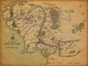

De: La Frikipedia, la enciclopedia extremadamente seria.
De: La Frikipedia, la enciclopedia extremadamente seria. De: La Frikipedia, la enciclopedia extremadamente seria.

|
FRIKIPEDIA QUIERE QUE ESTA DEFINICIÓN
PASE A SER UN ARTÍCULO FRIKIPÉDICO La información contenida en este artículo es una mínima parte de su jugo total, así que ponte los guantes, saca el tupperwere y empieza a exprimir el tema. Si lo haces serás recompensado con una galleta en almíbar y algo más. |
| De la serie Países del planeta tierra: | |||||
| Nueva Zelanda | |||||
|---|---|---|---|---|---|
| |||||
| Lema: Detente, insensato | |||||
| Himno: Ka mate! Ka mate! Ka ora! Ka ora!
| |||||
| 
| |||||
| Capital | Tierra Media | ||||
| Mayor ciudad | La Comarca | ||||
| Lenguas oficiales | Inglés y Maorí | ||||
| Gobierno | Tribus | ||||
| Jefe de la tribu | Frodo Bolsón | ||||
| Área | Dos islas a tomar por culo | ||||
| Población | Algunas personas y otras especies raras | ||||
| Moneda | El All Black | ||||
| Zona horaria | Es el primer país en ver salir el Sol | ||||
| Dominio Internet | .nz | ||||
| Código telefónico | 0009 periodo
| ||||
| Es donde transcurre "El Señor de los Anillos" | |||||
País de a tomar por culo que es famoso por dos cosas. El rugby y por ser el lugar donde se grabó El Señor de los Anillos.
Su geografía es muy simple: dos islas, una al lado de otra, y un monte en medio llamado Monte del Destino, lugar donde se acaba con el Anillo único. Es el primer país en celebrar el Año Nuevo, y sus habitantes son o rubios, o negros.
La más rara del mundo (ni Paramedic de Metal Gear Solid las conoce) Plantas chungas de todo tipo; venenosas, incomibles, infumables... Animales más raros que un perro verde... Pues eso, que el animal nacional es el kiwi, un bicho más raro que el pobre perro ya mencionado.
Autor(es):